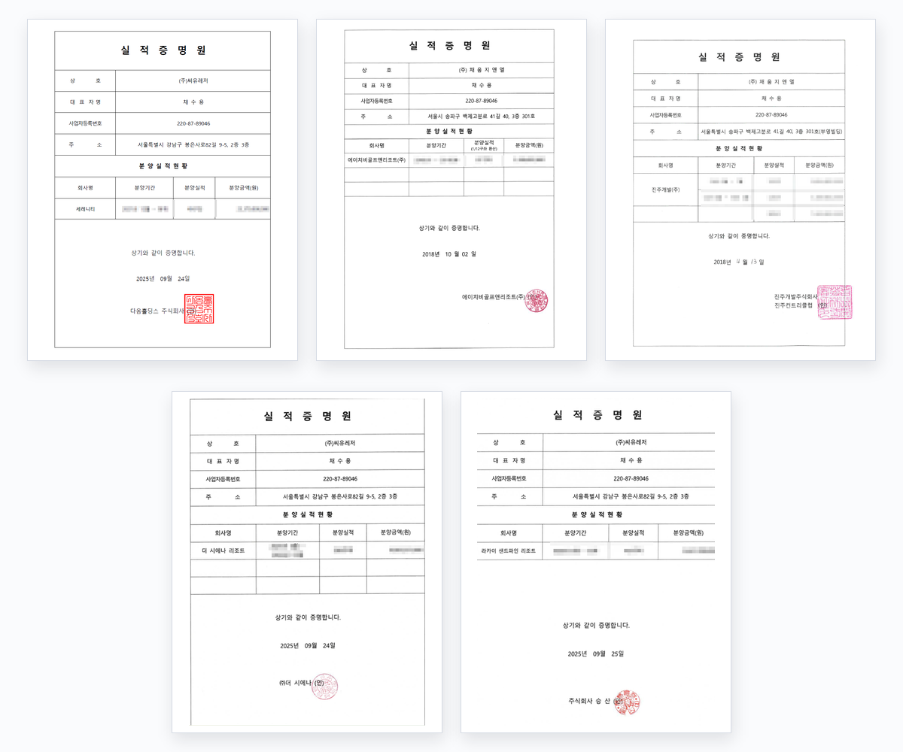

회원권 분양대행사 선정은 단순한 거래처 결정이 아닙니다. 분양 전략 수립, 마케팅 실행, 계약 체결까지 — 사업의 명운을 좌우하는 전 과정이 한 파트너의 손에 달려 있기 때문입니다. 잘못된 선정은 분양률 저조로만 끝나지 않고, 시행사의 브랜드와 자금 흐름 전체에 타격을 줍니다.
그렇다면 시행사는 분양대행사를 선정할 때 무엇을 봐야 할까. 업계에서 공통적으로 강조되는 다섯 가지 기준이 있습니다.
분양대행사 선정, 5가지 기준
-
전문성과 경험
회원권 분양은 일반 부동산 분양과 작동 방식이 다릅니다. 해당 지역의 특성과 분양 물건 유형에 대한 깊은 이해가 필수입니다.
- 회원권 분양 마케팅 경험과 노하우 보유 여부
- 해당 지역·물건 유형에 대한 이해 수준
- 성공적인 분양 실적이 실제로 존재하는가
-
마케팅 역량
아무리 좋은 상품도 알리지 못하면 의미가 없습니다. 타깃 수요층을 정확히 분석하고 그에 맞는 채널 전략을 설계할 수 있는가가 분양 성공의 핵심 변수입니다.
- 광고·홍보 전략의 창의성과 최신성
- 다양한 마케팅 채널 활용 능력
- 타깃 분석에 기반한 맞춤형 전략 설계
-
조직과 인력
좋은 전략도 실행할 사람이 없으면 무용지물입니다. 체계적인 조직 구조와 숙련된 담당자가 있는지 확인해야 합니다.
- 분양 업무를 수행할 충분한 인력 보유 여부
- 전문성 있는 담당자의 현장 배치
- 체계적인 조직 구조와 업무 프로세스
-
신뢰성과 평판
업계 내 평판은 그 회사의 과거 행적을 가장 솔직하게 보여줍니다. 긍정적인 평판, 그리고 불법 행위·민원 이력의 부재는 협업의 기본 전제입니다.
- 업계 내 평판과 신뢰도
- 과거 불법 행위·민원 발생 이력 확인
-
비용 및 계약 조건
적절한 수준의 수수료와 계약 조건이 제시되는지 확인해야 합니다. 지나치게 비싼 곳도, 지나치게 싼 곳도 신호입니다.
- 합리적이고 시장 평균을 벗어나지 않는 수수료
- 계약 조건의 투명성과 책임 범위 명시
그러나, 다섯 가지를 충족해도 한 가지가 빠지면 위험합니다
위 다섯 기준은 시행사 입장에서 반드시 점검해야 할 최소한의 항목입니다. 그러나 더 결정적인 한 가지가 있습니다.
말로만 "잘한다"고 하는 회사는 많습니다.
실제로 성공적인 분양을 이끌어낸 회사는 드뭅니다.
분양대행사를 선정할 때 가장 신뢰할 수 있는 검증 방법은 단 하나, 과거 진행했던 프로젝트의 실적을 서면으로 확인하는 것입니다. 계약서 사본, 매출 증빙, 그리고 가장 강력한 것은 시행사가 직접 발급한 실적증명서입니다.
실적증명서 — 시행사가 직접 발급한 공식 문서
실적증명서는 회원권 분양대행 업계에서 보유한 회사가 매우 드뭅니다. 단순한 자료집이나 포트폴리오와 달리, 실제 사업을 발주한 시행사가 직접 도장을 찍어 발급하는 공식 문서이기 때문입니다.
회사명, 분양 기간, 분양 실적, 분양 금액이 명시되어 있고 시행사의 법인 인감이 날인됩니다. 분양대행사의 능력을 가장 객관적으로 증명하는 단일 문서입니다.
일반 분양대행 vs 씨유레저, 무엇이 다른가
| 점검 기준 | 일반 분양대행 | 씨유레저 |
|---|---|---|
| 전문 분야 | 부동산 분양 일반 | 회원권·골프·리조트 분양 전문 |
| 평균 경력 | 검증 어려움 | 평균 18년 이상 전문가 |
| 고객 데이터 | 광고·매체 의존 | VIP DB 25만 건 보유 |
| 참여 시점 | 분양 개시 시점 | 인허가 단계부터 |
| 실적 검증 | 구두 또는 자료집 | 시행사 발급 실적증명서 |
| 관계 지속 | 분양 완료 시 종료 | 분양 이후 회원관리·A/S |
씨유레저의 실적증명서
씨유레저는 시행사로부터 분양 실적증명서를 정식 발급받아 보유하고 있습니다. 해당 사업을 발주한 시행사 명의로, 법인 인감이 날인된 공식 문서입니다.

이는 씨유레저가 단순한 "분양 대행"이 아니라, 시행사가 사업의 성공을 위탁하고 그 결과를 공식적으로 인정한 파트너로 일해왔다는 객관적 증거입니다. 회원권 분양대행 업계에서 이 수준의 서면 증빙을 갖춘 곳은 흔치 않습니다.
분양 성공의 첫걸음은 결국 '검증된 파트너'에서 시작됩니다
회원권 분양은 단숨에 이루어지지 않습니다. 시행사가 분양대행사를 선정하는 과정은 사업 전체의 성패가 갈리는 첫 결정입니다. 위에서 정리한 다섯 가지 기준을 점검하시고, 반드시 실적 증명을 서면으로 확인하시기 바랍니다.
씨유레저는 회원권 분양·마케팅 분야에서 20년 가까이 축적해온 실적과 시행사로부터 직접 발급받은 실적증명서를 보유하고 있습니다. 시행 중이시거나 사업 검토 단계에 계신 곳이라면 (주)씨유레저로 문의 가능합니다.